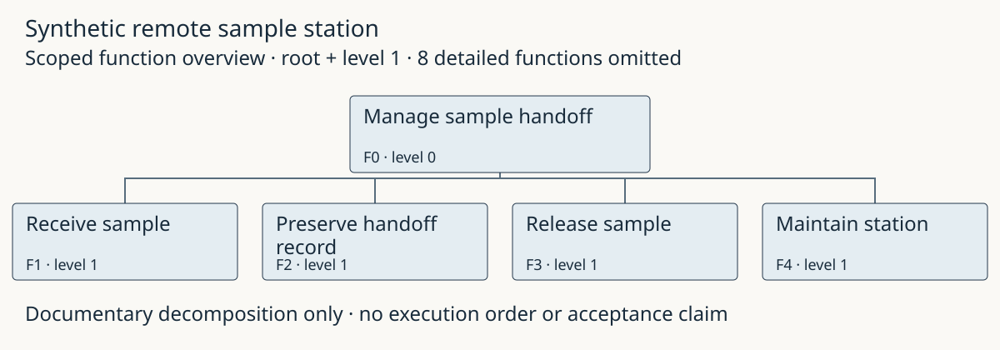

Engineering example gallery
Source models, readable views and bounded evidence. A parser pass, a synthetic behavior result and engineer acceptance remain different claims.

All sample-station policies, limits, obligations and allocations are fictional demonstration choices. No real analytical, public-health or safety suitability is claimed.